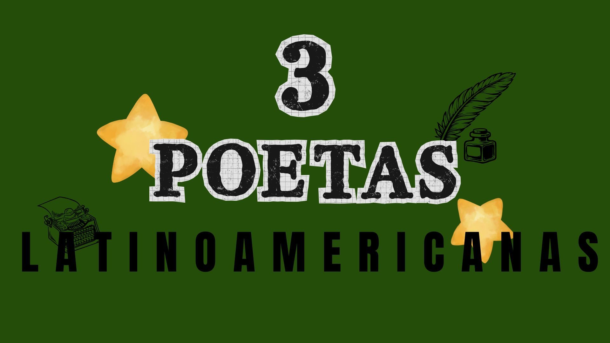
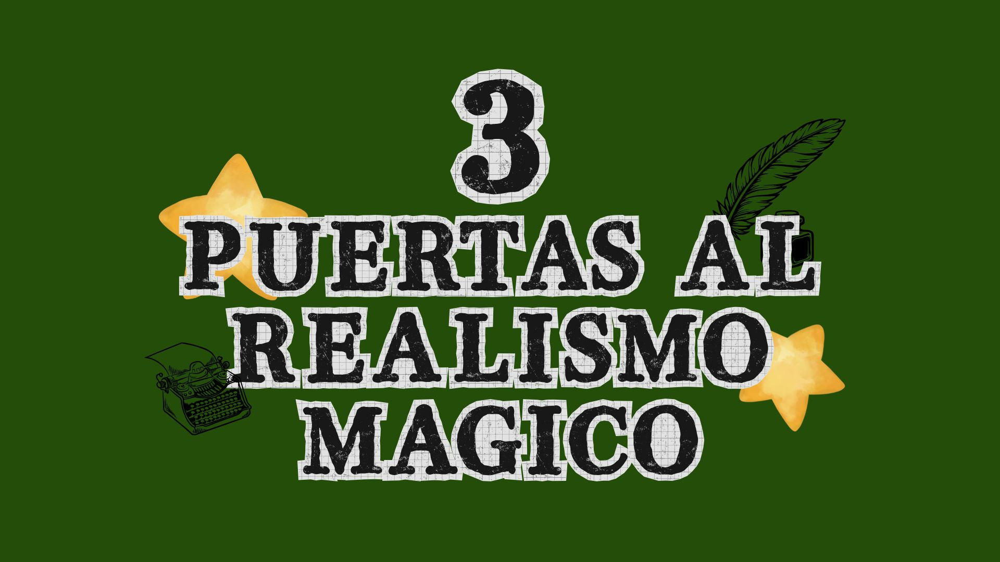

La literatura es una puerta a la imaginación, las emociones e incluso un escape de la rutina. Transforma pensamientos y sentimientos en prosa, rozando nuestros corazones y llenando nuestras mentes de creatividad. Por eso, desde Moka te recomendamos libros, autores, poesías y géneros para adentrarte en mundos fantásticos, románticos o tenebrosos que nos acompañan, nos conmueven y nos fascinan.
Algunas de las recomendaciones que forman parte del universo literario de Moka.

Tres poetas legendarias latinoamericanas que dejaron su huella marcada por generaciones mediante sus expresiones y palabras. Hoy con Moka te invitamos a recordarlas.
Leer artículo →
Si alguna vez quisiste adentrar en el mundo del realismo mágico y no sabes bien por dónde empezar, te dejamos una selección para que entres de a poco.
Leer artículo →Nuevas recomendaciones, autores y libros recomendaremos pronto en esta sección.